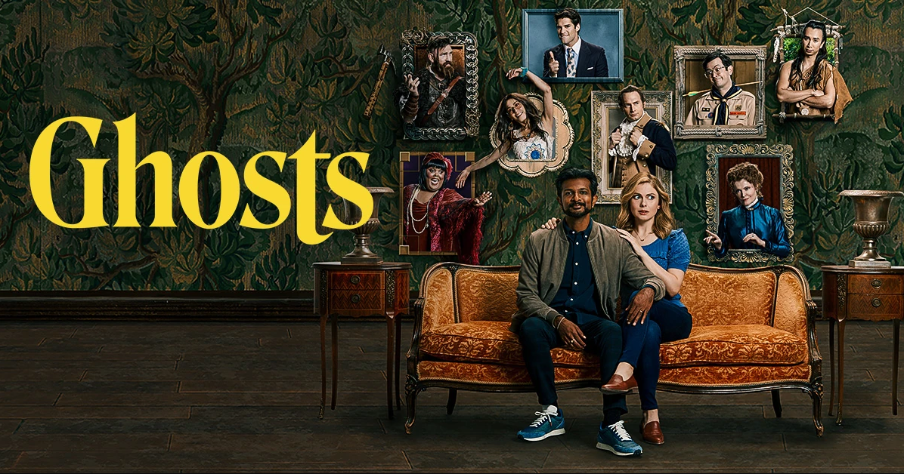
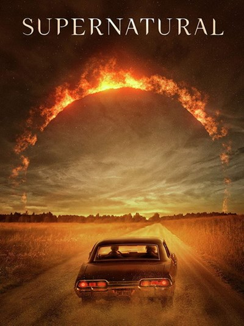

The TV Show List

Ghosts US
Ghosts US is a show about a couple, Jay & Samantha, who inherit a house and decide to turn it into B&B. But when Sam falls down the stairs and hits her head, she is now able to see Ghosts, and we get to know the many spirits living in their house, each from different time periods with their own personalities.
I enjoyed this show a lot, even though some episodes and scenes have inappropriate/sexual language and topics, so you might have to skip those.
Sherlock BBC
This show is set in 21st-century London and centered around the adventures of Sherlock Holmes, a consulting detective, and Doctor John Watson, a war veteran, sharing the flat 221B Baker St, solving baffling crimes, and helping Scotland Yard.
Sherlock BBC is a phenomenal show and one of my favorite TV shows ever. The plot? The mysteries? The chemistry between the characters??? This show is genuinely so good, and I beg everyone to give it a try, 10/10.
Spy x Family
Spy x Family is a show about a spy named Twilight, posing as Loid Forger, although it is shown from the point of view of Anya, a child Twilight adopted for his mission who happens to be telepathic. He marries Yor to complete their fake family, who is hiding her identity as an assassin, and their dog, Bond, can see the future.
This is a great anime with lots of comedy scenes, and I'd recommend it to people even as someone who doesn't really watch anime.

Supernatural
Supernatural is a show about two brothers, Sam and Dean Winchester, who follow in their dad's footsteps as hunters. They investigate paranormal activity and fight evil supernatural beings.
This is a pretty long-running show, so it does have a LOT of episodes and seasons, but I do enjoy it a lot so far. It has scary scenes, but they're sandwiched between bonding scenes, so as someone who can't watch scary movies without nightmares for months, I can easily enjoy this show and really get into it.